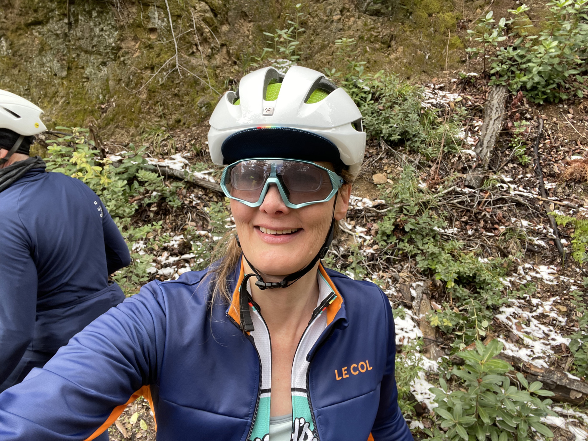
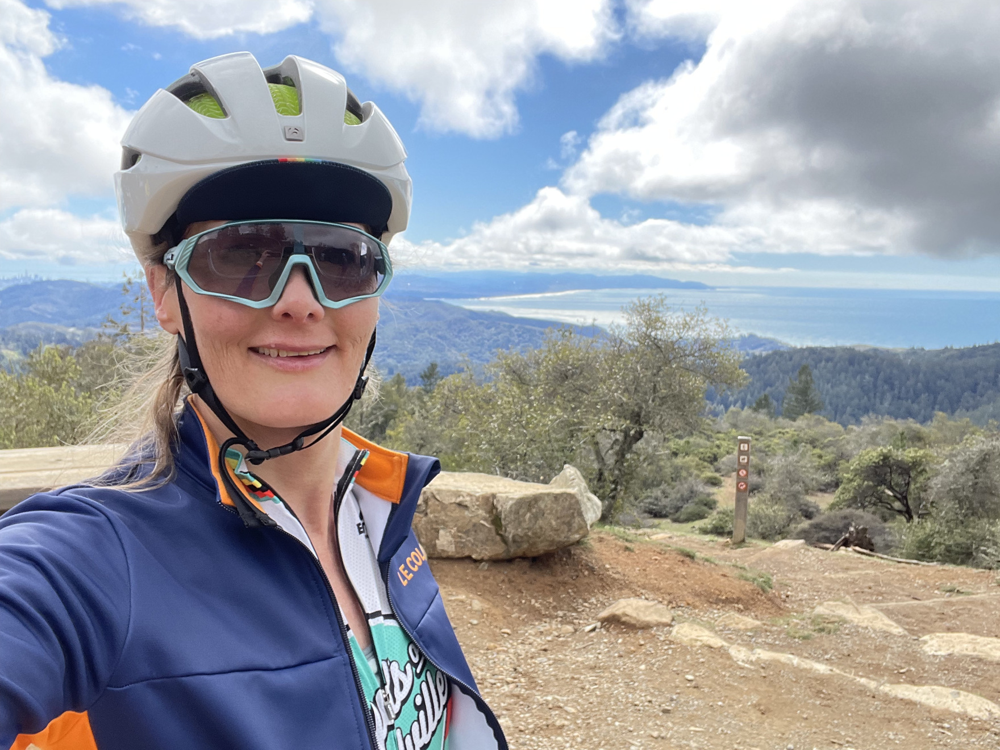
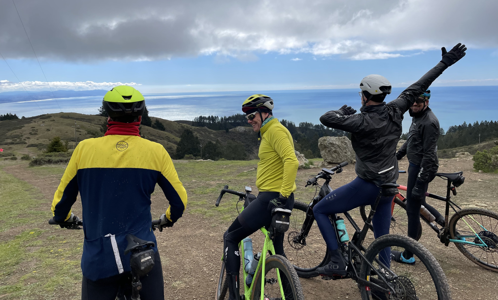
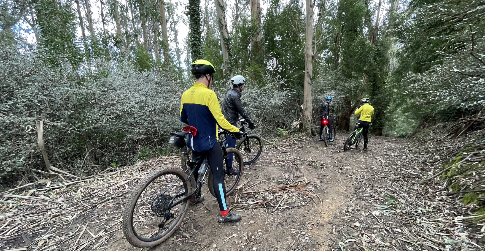

Utterly fantastic gravelbike climb up Mt. Tam, to Muir Beach, during rare snowy week in Bay Area.
Thirsty Thursday group of five of us -- part of East Bay Gravel Bikers.
The snow was in the cooler areas up Mt. Tam (didn't get on video, but picture stills).

<style>.content img { display: block }</style>


{{< youtube 5jdoXEbjKMI >}}
### 3 minute video, fast cuts -- *GREAT* way to experience the beauty of my new favorite local route!


SNOW!


West Point Inn - top of biggest climb - with stunning views of the Pacific Ocean sprawling in front of San Francisco


All new territory for us for the entire 2nd half of the day, thanks to Mike (dabbing in pic ;-)


A fun descent through eucalyptus trees.

